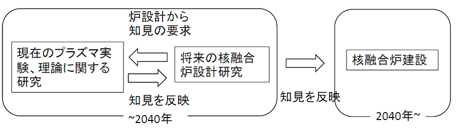
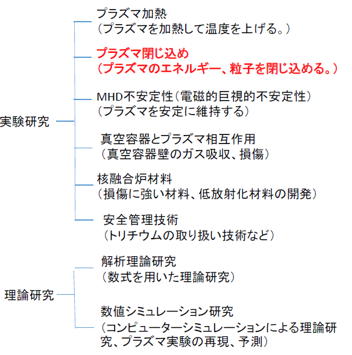
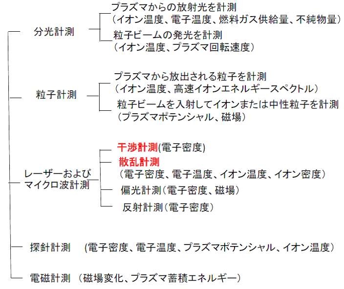
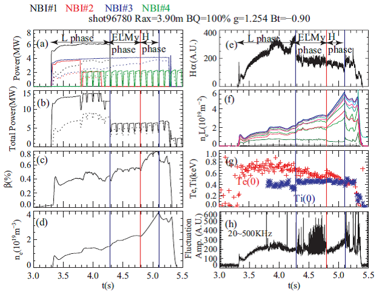
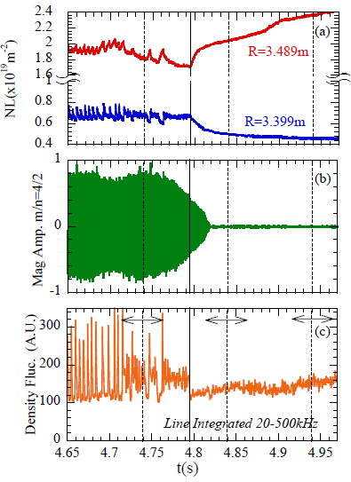

4-1. 核融合研究の全体像
ここでは皆さんにプラズマ計測の全般についてお話しします。その前に磁場閉じ込め核融合プラズマの研究において我々の研究室はどのような立場で取り組んでいるかについてお話しします。図4-1は核融合研究全体の流れを示したものです。核融合研究の目的は将来の核融合炉を建設することですが、そのための準備実験としてプラズマ閉じ込め装置を建設し、それを用いた研究を行っています。その知見に基づき、将来の核融合炉のための設計活動を行います。また、設計活動を進めていくうえで新たに課題が持ち上がればその要求に従って現在稼働中の装置で実験、理論解析を行う必要があります。設計には現在のプラズマ実験の知見が生かされるべきですが、炉設計に用いられる知見は確立した知見であることが必要です。私見ですが、炉設計と最新のプラズマ実験理論研究の間には少々見解のギャップがあり、図4-1に示すようなフィードバックループがなかなか形成できていないのが現状で今後の課題と思います。しかしながらプラズマ実験理論研究と炉設計は着実に進歩しており、2040年頃までこれらを続け、それまでに得られた知識を基に核融合炉を建設することになります。

現在のプラズマ装置における研究は図4-2に示すような研究がおこなわれています。九州大学総合理工学府先端エネルギー理工学の研究室では図4-2に示す研究項目を担っている研究室があります。その中で我々の研究室は実験研究で赤字で示したプラズマの閉じ込めの研究に取り組んでいます。
研究には実験研究と理論研究があり、およそ80%の研究者が実験研究に従事し、残りおよそ20%程度の研究者が理論研究に従事しています。また、理論研究は図4-2の実験研究のおよその研究項目について行われています。たとえば、われわれが行っているプラズマ閉じ込めに関する研究では、実験を行いプラズマを計測してプラズマの閉じ込めを評価します。And, プラズマの閉じ込めが何によって決まっているかを実験データを整理して考えていきます。また、理論研究者と議論をおこない、または理論計算を自ら行うことによりどのような“理屈”があるのかを解明していきます。ただ、実験と理論の共同研究も大変です。現在の研究は核融合に限らず研究は細分化され専門化されています。よって、他の分野のことは理解していないことが往々にしてあるのです。実験と理論の比較をうまくいかせるには自らの専門分野を超えて、相手の専門分野をある程度理解しておく必要があります。たとえて言うなら、これは、人間関係、特に男女関係に少し似ているかもしれません。円滑な人間関係には相互理解が必要です。先生も若いころは女性関係では相手のことが理解できず、または、自分のことを理解してもらえず、ずいぶん苦労しました。

赤字が田中謙治研究室で取り組んでいる研究
4-2. プラズマ計測の種類
実験研究にはプラズマの計測が必須です。プラズマの計測の諸量にはプラズマの密度、温度、電位（ポテンシャル）、磁場、プラズマからの発光、プラズマからの粒子、回転速度、などがあります。計測手法により分類すると図4-3のようになります。これらプラズマの諸量はたくさんの空間計測点があればそれぞれの諸量の空間構造を、早い時間変化を計測できればプラズマの諸量の揺らぎを計測することができます。空間構造はプラズマの閉じ込め性能の評価に重要です。一方、揺らぎの計測は大きな揺らぎ（電磁的な巨視的な揺らぎ）についてはプラズマの安定維持の研究に重要であり、小さな揺らぎ（微視的な乱流揺らぎ。電磁的な揺らぎも静電的な揺らぎもある）はプラズマのエネルギーや粒子の閉じ込め劣化を引き起こすと考えられており、そのプラズマの閉じ込めの研究に重要です。私たちの研究室ではレーザーを用いた干渉計測とマイクロ波を用いた散乱計測の開発に取り組んでいます。各種プラズマ計測の詳細については参考文献7～9を参照してください。

赤字が田中謙治研究室で開発している計測
4-3. プラズマ実験の紹介（LHDにおけるHモード遷移）
図4-4にLHDのプラズマの放電波形の一例を示します。図4-4を例に計測データを説明していきましょう。この放電はHモード（Hはhighの頭文字で閉じ込め性能が高いことを意味する。）という閉じ込めが放電途中でよくなる放電の例です。図4-4(a),(b)には加熱用の中性粒子ビームのパワーを示します。実線で示す真空容器に入射したパワーは中性粒子ビームの加速電圧とビーム電流から評価します。少々厄介なのはプラズマに吸収されるパワーの評価です。これは数値計算により求めることができますが、かなり計算時間がかかるため、簡便に評価するためには中性粒子入射ビームの入射窓のプラズマを挟んで反対側の真空容器中に炭素板を設置し、炭素板の温度上昇を赤外線カメラで計測することによりプラズマに吸収されないパワーを計測します。この吸収されないパワーを真空容器に入射したパワーから差し引くことによりプラズマに吸収されたパワーを評価することができます。
図4-4(c)はβ（ベータ）値といわれる値で（プラズマの蓄積エネルギー）/（磁場エネルギー）をパーセントで示したものです。プラズマの蓄積エネルギーはプラズマの温度×密度ですが、これらは密度と温度を計測しなくても真空容器に巻き付けたコイルの電流を計測することにより評価できます。これはプラズマが生成されることによりコイルに磁場を妨げる方向に流れる反磁性電流が流れるためです。
核融合炉のコストで最もお金がかかるのはコイルの製作費用です。磁場強度が大きくなると一般に閉じ込め性能は良くなるのですが、費用が掛かります。よって、できるだけ低い磁場で高いプラズマエネルギーを閉じ込めることが要求されます。核融合炉が経済的に成立するにはベータ値は5%程度必要と言われています。ただし、ベータを上げると電磁的な不安定性が強くなりプラズマの安定した維持が困難になります。また、ベータを上げつついかにプラズマを安定にし、良好な閉じ込めを維持するのかが磁場閉じ込め核融合研究の課題の一つです。
図4-4(d)に示すのが遠赤外線レーザー干渉計で計測した線平均電子密度の時間変化です。干渉計については「干渉計測とトムソン散乱計測」で詳しくお話しします。干渉計で計測する電子密度はプラズマ中のレーザー光に沿って足し合わせた（線積分した）電子密度です。よって、同じ電子密度でもプラズマのサイズが大きくなると計測値は大きくなります。プラズマの実験で必要なのはあくまで電子密度の値そのものなので、線積分した電子密度をプラズマのサイズで割り算して平均的な電子密度をもとめます。この線平均電子密度が実験でのプラズマの密度のモニターとして最も良く用いられます。
一方、図4-4(f)には11チャンネルの干渉計の積分した線密度が示されています。図4-4(d)では縦軸の単位が $\text{m}^{-3}$、図4-4(f)では縦軸の単位がレーザー光がプラズマ中で走る長さ（光路長）に沿って密度を積分することになるので単位が $\text{m}^{-3}$ に $\text{m}$ をかけて $\text{m}^{-2}$ になっていることに注意してください。図4-4(f)ではそれぞれの色の線は異なるコード位置での計測を示します。コード位置により時間変化が異なることが重要です。また、これらの干渉計のコードの信号から電子密度の空間構造を求めることができます。これについても「干渉計測とトムソン散乱計測」の頁でお話しします。
ところで、将来の核融合反応については「核融合とは」の頁の図2-1、現在の実験装置での反応については図3-2で示しましたが、これらの図で出てくるイオンの密度（$\text{T}^+$, $\text{D}^+$, $\text{H}^+$）が図4-4で出てきませんよね。核融合反応で反応を起こすのはあくまでイオンで電子ではありません。しかし、残念ながら（$\text{T}^+$, $\text{D}^+$, $\text{H}^+$）といったイオンの密度を直接計測することは不可能ではありませんが技術的に大変困難なのです。$\text{H}^+$ イオンのみのプラズマではプラズマの準中性の特徴から電子密度＝イオン密度と考えることができますが、$\text{T}^+$ や $\text{D}^+$ が混合する場合は電子密度の計測からは両者を区別することができません。また、$\text{H}^+$ を用いた実験でも $\text{H}^+$ 以外のイオン（$\text{He}^{2+}$, $\text{C}^{6+}$, $\text{Fe}$, $\text{Cr}$ イオンなど。$\text{Fe}$, $\text{Cr}$ は複数の価数のイオンが存在）が存在し、本当に必要な水素イオンの密度の評価というのは結構厄介なのです。
図4-4(e)には水素原子の放射光強度を示します。真空容器に取り付けた燃料噴射バルブから、または壁から水素ガスが放出されます。プラズマ中では水素分子は水素原子となり、さらに電子がはがれて水素イオンとなります。図4-4(e)は水素原子がプラズマ中に入射したときにプラズマ中の電子との衝突により高いエネルギー状態の水素原子が低いエネルギー状態の原子に遷移するときに放射する光強度で、水素原子密度、すなわち入射された燃料ガスの量の指標になります。
図4-4(h)は電子密度の揺らぎの振幅の時間変化を示しています。これは二次元位相コントラストイメージング（Two dimensional Phase Contrast Imaging ; 2D-PCI）を用いて計測しました。2D-PCIは我々の研究室で開発を進めてきた計測手法で電子密度の乱流を計測できます。詳細については「研究紹介」の頁でお話しします。電子密度乱流が電子密度の閉じ込めに関与していることが考えられています。
それでは、上に述べた計測の知識を基にもう一度図4-4を眺めてみましょう。

(a)中性粒子加熱ビームパワー（ビーム別）、(b)中性粒子ビーム加熱パワー（総量）、(c) β=(蓄積エネルギー)/磁場エネルギー、(d)線平均電子密度、(e)水素原子発光量、(f)線積分電子密度（干渉計の各コードの計測値）、(g)中心電子温度Te(0), 中心イオン温度Ti(0)、(h)プラズマ電子密度揺らぎ。(a),(b)において実線は真空容器中に投入されたパワー、点線はプラズマに吸収されたパワー[10]
図に示しているNBIとはNeutral Beam Injectionの略で、水素イオンを高電圧で加速した後で水素原子にしてプラズマに入射します。中性にするのは、イオンであれば閉じ込め磁場によりビームの入射方向が大きく曲げられてしまうためです。図中の#1は1号機の意味で、#2, 3, 4もそれに倣います。(a)に示すように3.3秒でNBI#1, 2, 3が全体で13MWのNBIが入射されます。通常NBIは加熱に用いられますが、LHDでは初期のプラズマの電離にも用いることができることを見出しました[11]。通常ヘリカル系では電子レンジと同じ原理であるマイクロ波電子共鳴を用いてプラズマを着火しますが、電子共鳴を用いるためには閉じ込め磁場に共鳴するマイクロ波発振器を用意する必要があり、このマイクロ波発振器は非常に高価なシステムなので実験できる磁場が限られていました。NBIでプラズマを着火することができ、LHDでは実験できる磁場が大きく広がりました。入射した高エネルギーの水素原子はプラズマと衝突を繰り返して加熱します。
3.7秒で赤線で示したNBI#2の出力が半分になり4.15秒には停止します。これは機械トラブルによるものです。3.7秒には緑線で示したNBI#4が入射されます。他のNBIと異なるNBI#4は2MWのパワーが0.08秒入射された後で0.02秒停止しています。これは機械トラブルでなく、ビームの放射光から荷電交換分光という計測手法を用いてイオン温度とプラズマの回転を計測するためです。ビーム放射光から背景のプラズマの放射光を差し引くためにNBI#4を0.02秒停止しています。(g)に示すようにNBI#4が入射されるとイオン温度が計測可能になります。
4.3秒で黒線で示したNBI#1が停止します。この停止はトラブルでなく意図的に停止しました。(e)に示すように4.3秒で水素原子の発光強度が突然減少します。これはプラズマへの燃料供給が突然減少したことを示します。実は4.3秒の前後では燃料噴射バルブから入射した水素ガスの量は変わらないのです。これはどういうことかというと、プラズマの燃料はこの実験の場合水素なのですが、水素は真空容器の壁に吸着します。プラズマと真空容器壁は常に触れ合っており、外部からの燃料供給だけでなく壁から放出される水素ガスも燃料となります。4.3秒では突然壁からのガスの放出が減少したことが考えられ、これはNBI#1を停止したことによりプラズマの周辺部の状態が変化したことが原因だと考えられます。いずれにせよ、重要なのは燃料供給が減ったにもかかわらず、密度が減少せずに、むしろ密度が増加していることです。これは電子密度の粒子閉じ込めがよくなっていることを示していますが、閉じ込め状態が改善したとは言えません。なぜなら、加熱パワーが減少すると閉じ込めはよくなるからです。逆に言うと加熱パワーをあげると閉じ込めは一般には悪くなります。これが核融合反応を起こすための難しさの原因です。
ただ、注目すべきは4.8秒の前後のプラズマの応答です。もう一度縦の赤線が引いてある4.8秒前後を見てください。4.8秒前後でも燃料バルブから供給した水素ガスの量は変わりません。(e)に示しているように水素原子の発光強度が減少します。よって、壁から放出され燃料としてプラズマに流入する水素原子の量も減ります。ただし、4.3秒とは異なりこのときは(a),(b)に示すようにNBIの入射パワーは変化がないのです。それにもかかわらず、(d),(f)に示すように電子密度が急激に上昇を始めます。入射パワーが一定で燃料供給が減っているにもかかわらず電子密度が増大するのは、電子密度の粒子閉じ込めがよくなっただけでなく閉じ込め状態が改善したことを示します。突然状態が変わる現象を遷移現象と呼び、閉じ込め状態が改善する遷移現象のことをHモード遷移と呼びます。ただ、この密度の上昇は永遠には続かず5.1秒で上昇は停止し、密度が減少します。5.1秒前後は(a),(b)に示すように入射パワーは一定、(e)に示すように燃料供給は僅かに増加しているのにもかかわらず、密度は減少してしまいます。これは閉じ込めの改善状態が終わったことを示します。何事もよいことは永遠には続かないものです。

4.8秒前後の変化をもう少し詳しく見てみましょう。図4-5に干渉計の線積分密度、磁気プローブで計測した磁場揺動（磁場の揺らぎ）、2D-PCIで計測した電子密度揺動（電子密度の揺らぎ）を示します。図4-5(a)で赤線と青線を示していますが赤線はプラズマの少し内側、青線はプラズマの少し外側を示します。4.8秒まではギザギザしたのこぎりの歯のような振動が見えますが4.77秒あたりにそれが消えて静かになり、4.8秒で赤線は上昇し、青線は減少します。図4-4(d)に示すように平均的な電子密度は4.8秒で上昇に転じています。図4-5(a)は4.8秒以降に周辺部分で密度の空間変化が急峻になったことを示しています。
図4-5(b)は真空容器内部に設置したコイルを流れる電流の変化を計測したものです。この計測器は磁気プローブと呼ばれます。磁気プローブの信号は4.77秒以降、徐々に減少して4.82秒では完全に消失します。プラズマは電磁流体でプラズマの変化は電流の変化を伴い、よって磁場が変化します。この変化を磁気プローブで計測します。磁気プローブ信号の消失は磁場の揺らぎの原因がなくなったためで、これが閉じ込めの変化にも寄与している可能性があります。最も面白いのは2D-PCIで計測した図4-5(c)の電子密度揺動の信号の変化です。図4-4では4.5-4.8秒で信号が大きくなっているように見えますが、これは図4-5(c)に示すように信号が常に強いわけでなく間欠的に大きな振幅を持つ信号が現れています。図4-5(a)ののこぎり歯上の振動が消えると同時にこの間欠大振幅信号も消え、さらに4.795秒で密度が上昇を開始するタイミングで揺動の信号がさらに減少します。図4-5(b)の磁気プローブの信号と異なり図4-5(c)の電子密度揺動の信号は、図4-5(a)に示す電子密度信号の上昇と同じタイミングで減少するので、閉じ込め改善に電子密度揺動の減少が直接的に関与している可能性が高いといえます。
このようにプラズマにも人間の人生と同じようにいろんなことが起こるのです。努力しても報われない時期（3.3-4.3秒に対応）がある。何かがきっかけで変化が起きる（4.3-4.8秒に対応）、さらに突然物事がうまくいきだす（4.8-5.1秒に対応）、しかしそれは永遠には続かずに終焉する（5.1秒に対応）。プラズマからも人生を学ぶことができますね。
それでは次に各種計測の中で我々の研究室で取り組んでいる干渉計測とトムソン散乱計測についてその原理をお話しします。トップページより「干渉計測とトムソン散乱計測」に進んでください。
参考文献
- プラズマ核融合学会・核融合学会編, “プラズマ診断の基礎”, 名古屋大学出版会, 1990
- プラズマ核融合学会・核融合学会編, “プラズマ診断の基礎と応用”, コロナ社, 2006
- I. H. Hutchinson, “Principle of Plasma Diagnostics”, Second Edition, Cambridge University press, 2001
- K. Tanaka, L.N. Vyacheslavov, K. Toi, T. Kobayashi, S. Inagaki, C.A. Michael, D. R. Mikkelsen, J.A. Baumgaertel, G. Hammett, W. Guttenfelder, T. Evans, Y. Takemura, S. Sakakibara, Y. Suzuki, M. Yoshinuma, C. Suzuki, K. Ida, I. Yamada, R. Yasuhara, K. Narihara, T. Akiyama, T. Tokuzawa, K. Kawahata, S. Morita, T. Morisaki, ”Characteristics of Micro Turbulence in H-mode Plasma of LHD”, 24th Proceeding of IAEA Fusion Energy Conference, San Diego, U.S.A., 8-13 Oct., 2012
- O. Kaneko, Y. Takeiri, K. Tsumori, Y. Oka, M. Osakabe, H. Funaba, S. Morita, B.J. Peterson, S. Sakakibara, K. Tanaka, T. Mutoh, M. Sato, K. Ohkubo, A. Komori, H. Yamada, N. Ohyabu, K. Kawahata, O. Motojima, ”Plasma startup by neutral beam injection in the Large Helical Device”, Nuclear Fusion, 39, 1087, (1999)